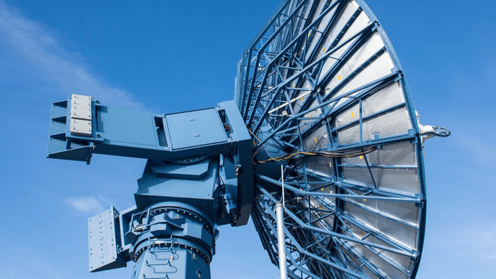

THE PIVOTAL ROLE OF IT IN
SPACE EXPLORATION

Space Communication
Information Technology (IT) is essential for establishing efficient communication between spacecraft, satellites, and ground stations.
Mission Control
Control systems heavily rely on IT solutions to monitor and manage spacecraft, calculate trajectories, and make orientation adjustments.